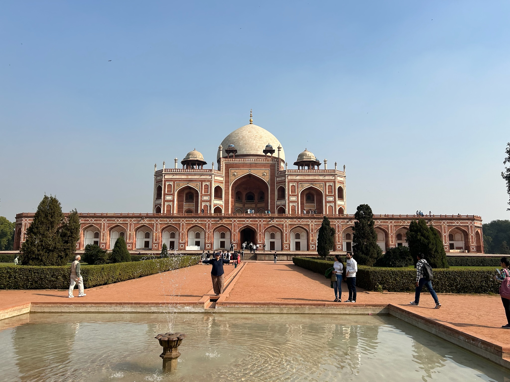
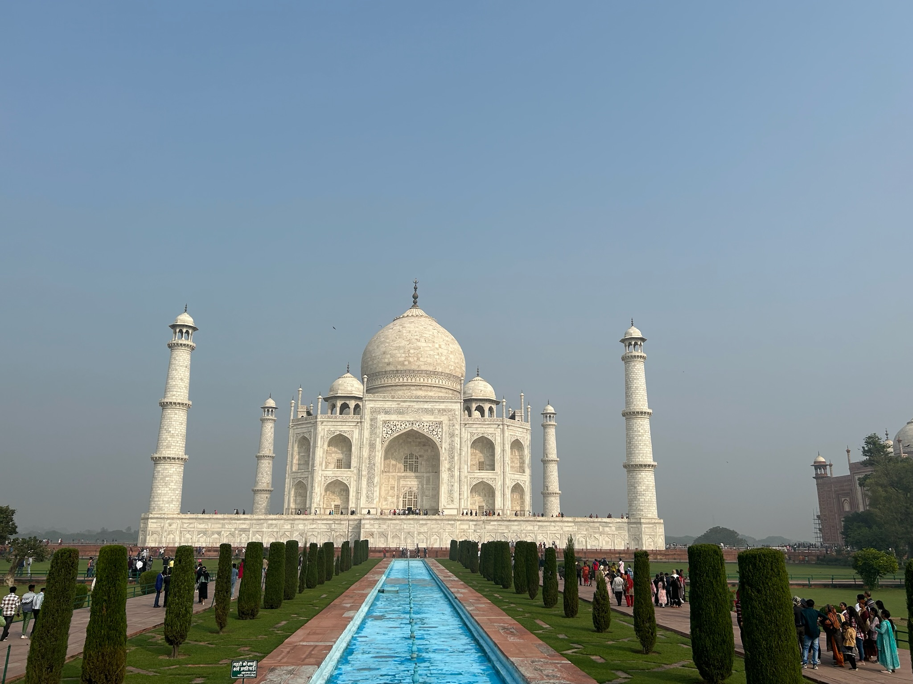
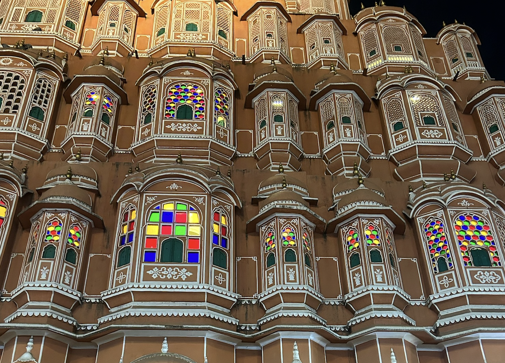
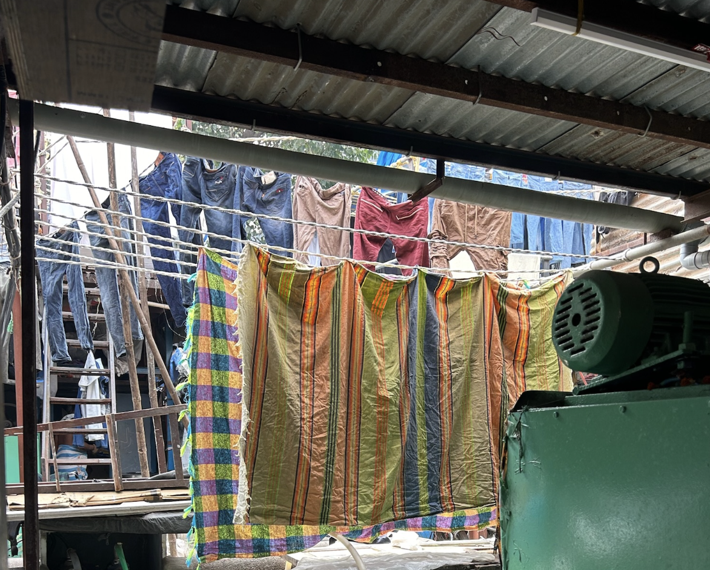
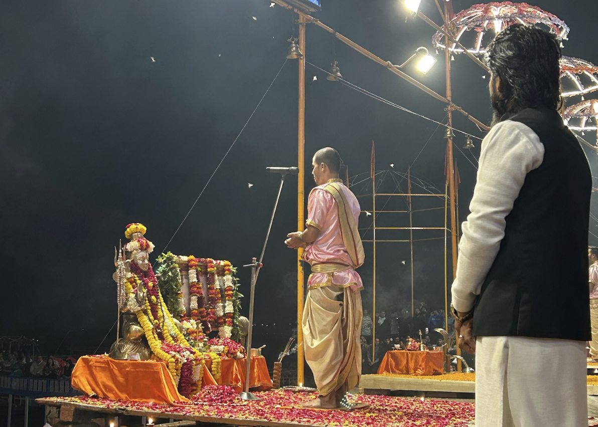

01 · Delhi
Une ville de contrastes.

02 · Agra
Le célèbre Taj Mahal.

03 · Jaipur
La ville rose et ses palais.

04 · Mumbai
Une métropole pleine d’énergie.

05 · Varanasi
Une ville au bord du Gange.
Les petites histoires du voyage
Les imprévus font les souvenirs !
🚆 Le train « à l’heure »
On nous a raconté l’histoire d’un homme ravi : son train arrivait enfin à l’heure…
En réalité, c’était le train de la veille !
🧭 Changer les plans
Un jour, nous avons dû modifier notre programme pour visiter des endroits que nous avions mal planifiés.
La leçon : en voyage, il faut savoir s’adapter !
À compléter avec le lieu que vous avez finalement pu découvrir.
En images
Quelques souvenirs en photos


Fin du voyage…
Merci pour votre attention !
Trois semaines inoubliables, des découvertes et des souvenirs que nous garderons longtemps.
😊 Des questions ?